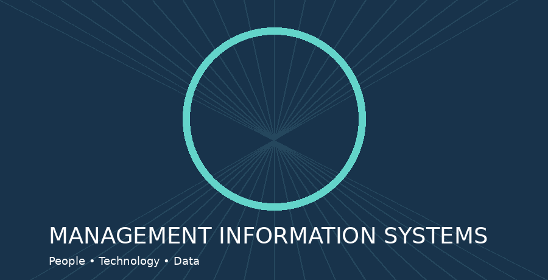

MIS & AI EthicsWebsite OverviewReena VollalaOctober 18, 2026 My Original Overview DraftManagement Information Systems (MIS) help organizations collect, store, and use information to make decisions. This website explores how MIS supports businesses through artificial intelligence, cybersecurity, and databases. Artificial intelligence can help students and employees brainstorm ideas, recognize patterns, and work efficiently. However, ethical AI use requires honesty, fact-checking, and respect for academic guidelines. Cybersecurity is also important because malware and hacking can expose valuable information or interrupt services. By learning about these topics, visitors can better understand how technology supports responsible decision-making. AI-Polished OverviewManagement Information Systems (MIS) help organizations organize information and turn it into useful business decisions. This website introduces MIS through three connected topics: artificial intelligence, cybersecurity, and database management. AI can improve productivity by supporting research, recognizing patterns, and generating ideas. Using AI responsibly means verifying its claims, acknowledging assistance, and following academic integrity rules. Cybersecurity protects sensitive data and business operations from threats such as malware and unauthorized access. Together, these topics demonstrate how technology can help organizations operate effectively and ethically. Learn more from Gartner, MIT Technology Review, and IBM. MIS Topics Overview
|